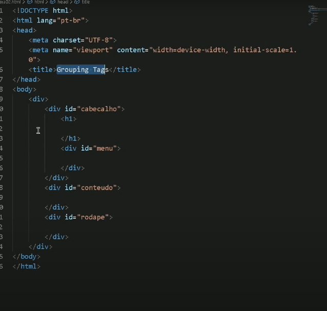

Assunto Principal
A partir do html5 a maneira como se cria sites deu uma mudada
Antes usava-se muito a tag div para agrupar elementos dando um id para ela para identificala
ex:
porem a partir do html 5 ganhamos novas tags que tambem são consideradas divs porem agora elas tem um significado, oque as torna semanticas
algumas dessas tags são:
atenção
nenhuma dessas tags acrescenta ou retira funcionalidades, são apenas div porem com um significado semantico